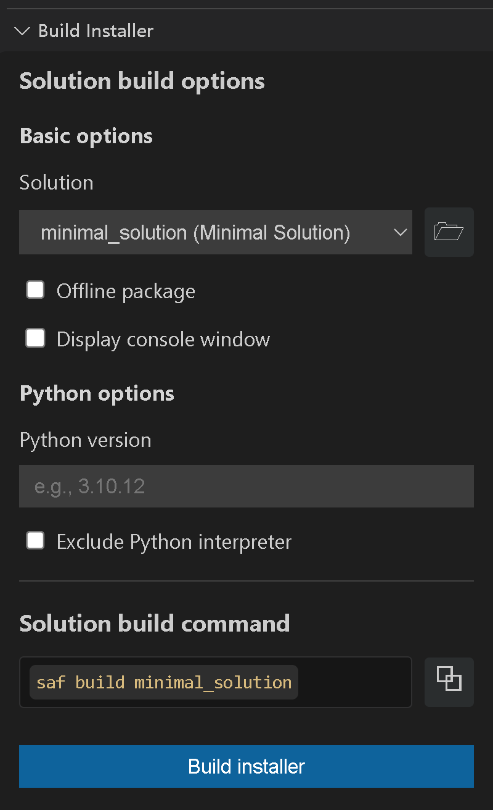

Build a distributable desktop installer#
For distributing your solution to end users, you can create a standalone installer that packages the solution code, its dependencies, and a Python interpreter (optional) into a single executable file. This is particularly suited for desktop deployments where users can install and run the solution without needing to set up a Python environment.
Prerequisites#
Before building the installer, you must have already installed the solution:
saf install <solution-name>
Important
The saf build command only works with solutions that use Dash-based UI frameworks (dash).
Build the installer#
Build the installer using SAF CLI.
For the default online installer, run the base command in the solution root directory, replacing
<solution-name>with the name of your solution:saf build <solution-name>
Note
This command generates an online installer by default. That is, the installer downloads the required dependencies from the internet during installation.
For an offline installer that does not require internet access during installation:
saf build <solution-name> --offline-package
For an installer that displays the console window when running the solution:
saf build <solution-name> --display-console-window
Tip
Use the
--display-console-windowoption during development and testing to see any console output or error messages. Once the solution is stable, you can recreate the installer without this option to hide the console window for end users.To specify a particular Python version for the solution:
saf build <solution-name> --python-version <version>
To exclude the Python interpreter from the installer:
saf build <solution-name> --exclude-python
Build the installer using Solutions Manager.
Open Visual Studio Code.
In the Activity Bar, click the Solutions Manager icon.
In the Solutions Manager pane, expand the Build Installer view.

At the top of the panel, select the solution to build and configure its Python environment:
Select the solution you want to build.
Enter the Python version to use for the solution (for example,
3.11.12).If you want to exclude the Python interpreter from the installer, select Exclude Python interpreter.
Below the Python options, select any of the following build configuration options as needed:
Solutions Manager build options# Option
Command flag
Description
Offline package
--offline-packageCreates an offline installer that includes all dependencies.
Display console window
--display-console-windowShows a console window when the built solution runs.
Tip
Select this option during development and testing to see any console output or error messages. Once the solution is stable, you can recreate the installer without this option to hide the console window for end users.
Encrypt solution code
--encryptEncrypts the solution source code in the installer.
Obfuscate solution code
--obfuscateObfuscates the solution source code in the installer.
Bundle executable as directory
--executable-as-dirBundles the executable as a directory instead of a single file. Required when the installer exceeds the 4 GB PyInstaller limit.
Force building Python from source
--force-python-from-sourceForces the Python interpreter to be built from source instead of using a pre-built distribution (Windows only; on Linux, Python is always built from source).
Do not create an executable
--no-executableSkips creating an executable (useful for testing).
Encryption file list
--encryption-file <TEXT>Selects a file listing which files to encrypt. Use the browse button to select a file.
Encryption key
--encryption-key <TEXT>Sets the key used to encrypt the solution code.
Environment file
--env-file <TEXT>Specifies a custom environment file to use for the build. Use the browse button to select a file.
Solution entry point
--solution-entry-point <entry_point>Specifies the solution entry point module (for example,
ansys.solutions.mysoln.main).GitHub token
--github-token <TEXT>Sets a personal access token used to access private GitHub dependencies.
Solution UI framework
--solution-ui-framework <framework>Specifies the UI framework used by the solution (for example,
dash).Build the installer.
Click the Build installer button. Alternatively, you can copy the command under Solution build command and run it in the terminal.
{kind=link}
The installer is saved in the dist directory of the solution root directory.
Result
When the installer is built, it performs the following actions:
Bundles the solution code, its dependencies, and (unless
--exclude-pythonis used) a Python interpreter into a solution folder.Uses PyInstaller to package the solution folder into a standalone installer executable (or an installer directory, if
--executable-as-diris used).
The saf build command#
The base saf build command generates an online installer by default. That is, the installer downloads the required dependencies from the internet during installation.
This command is platform-specific; it generates an installer compatible with the operating system of the machine where the command is run.
When run on a Windows machine, it generates an installer compatible only with Windows.
When run on a Linux machine, it generates an executable compatible only with Linux.
See also
For examples of some commonly used
saf buildcommand options, see saf build examples.For a reference table of all available
saf buildcommand options, see saf build options.
saf build options#
The saf build command has multiple options. To see them all, run the following command:
saf build --help
The following saf build command-line options are available:
Option |
Description |
Default value |
|---|---|---|
|
Displays the console window when running the solution. |
Disabled |
|
Encrypts the solution code before packaging.
|
Disabled |
|
A file listing which files to encrypt (specifies the |
Not set |
|
The encryption key to use for obfuscation. |
Not set |
|
Creates the installation executable as a directory instead of a single file. Mandatory for solutions that produce an installation executable larger than 4 GB. |
Disabled |
|
Forces the installer to build Python from source instead of using a NuGet distribution (Windows only; on Linux, Python is always built from source).
Mandatory if the solution depends on |
Disabled |
|
Does not create an executable installer for the solution. |
Disabled |
|
Obfuscates the solution code before packaging. |
Disabled |
|
Creates a package that installs without internet access. |
Disabled |
|
Does not ship the Python interpreter with the packaged solution. |
Disabled |
|
The Python version to use for the solution. |
Not set |
|
The main solution entry point to start the solution.
The module should be a dotted import (for example, If not provided, the solution runs with the default entry point (for non-Dash solutions only). |
Not set |
|
Personal Access Token for downloading dependencies from GitHub. |
Not set |
|
The UI framework used in the solution (for non-Dash solutions only). |
Not set |
|
Add this flag if the solution does not use SAF/GLOW. |
Disabled |
|
Loads environment variables from this file. |
|
saf build examples#
Offline installer#
To create an offline installer that does not require internet access during installation, use the --offline-package option:
saf build <solution-name> --offline-package
Display console window#
On Windows, the installer runs the solution with pythonw by default to hide the console window. To display the console window when running the solution,
use the --display-console-window option:
saf build <solution-name> --display-console-window
Tip
We recommend that you to use this option during development and testing to see any console output or error messages. Once the solution is stable, you can create the installer without this option to hide the console window for end users.
Python interpreter version#
By default, the installer includes the same version of Python as the one used to run the saf build command. This is not true for versions that are affected by the
vulnerabilities CVE-2025-47273 and CVE-2025-6345.
If saf build is run with any of these versions, the latest available patch version for that minor version is used instead. This affects the following versions:
For Python 3.10: versions < 3.10.19
For Python 3.11: versions < 3.11.14
To specify a particular version of Python, use the --python-version option:
saf build <solution-name> --python-version <version>
If you specify major or major.minor version of Python, the version downloaded is the latest available for that major or major.minor version.
saf build <solution-name> --python-version 3 # Installs the latest available Python 3.X version
saf build <solution-name> --python-version 3.10 # Installs the latest available Python 3.10.Y version
saf build <solution-name> --python-version 3.11 # Installs the latest available Python 3.11.Z version
saf build <solution-name> --python-version 3.12 # Installs the latest available Python 3.12.X version
saf build <solution-name> --python-version 3.13 # Installs the latest available Python 3.13.X version
saf build <solution-name> --python-version 3.14 # Installs the latest available Python 3.14.X version
saf build <solution-name> --python-version 3.10.11 # Installs the latest available Python 3.10.Y version
saf build <solution-name> --python-version 3.10.19 # Installs the specific Python version 3.10.19
saf build <solution-name> --python-version 3.11.8 # Installs the latest available Python 3.11.Z version
saf build <solution-name> --python-version 3.11.14 # Installs the specific Python version 3.11.14
saf build <solution-name> --python-version 3.12.2 # Installs the specific Python version 3.12.2
saf build <solution-name> --python-version 3.13.2 # Installs the specific Python version 3.13.2
saf build <solution-name> --python-version 3.14.2 # Installs the specific Python version 3.14.2
Exclude Python interpreter#
To create an installer that does not include a Python interpreter, use the --exclude-python option:
saf build <solution-name> --exclude-python
Even though Python is excluded, it is still downloaded during the build process. However, as it is not shipped to the end user, the limitations related to vulnerable Python versions do not apply.
Warning
When excluding Python, the target machine must have a compatible Python version present for the solution to be installed and run. To make sure that the solution works in the target machine, we recommend that you add the --python-version option specifying the Python version to be used in the target machine.
Force building Python from source (tkinter support)#
To force the installer to build Python from source, use the --force-python-from-source flag:
saf build <solution-name> --force-python-from-source
This option is mandatory if your solution depends on tkinter, as the Python builds distributed via NuGet do not ship with the tkinter library.
Directory-based installation executable#
By default, the installation executable generated by the saf build command is created as a single file. However, you can choose to create it as a directory containing the
executable and all the necessary files instead. This is mandatory for solutions that produce an installation executable larger than 4 GB, which is a limit established by
PyInstaller.
saf build <solution-name> --executable-as-dir
The resulting structure of the directory is as follows:
<solution_root>/dist/
└── <solution_display_name>-installer/
├── <solution_display_name>-installer (.exe for Windows)
└── _internal/ (includes all the files needed for the installation executable)
└── ...
SAF build output#
When you run saf build without the --no-executable option, the following files are generated in the dist/ folder:
<solution-root>/dist/
├───ansys_solutions_<solution_name>-<version>-py3-none-any.whl
├───ansys_solutions_<solution_name>-<version>.tar.gz
├───<solution-name>-installer.exe
└───solution
├───README.md
├───requirements.txt
├───solution-metadata.json
├───solution_desktop_deployment.py
├───version.txt
├───assets
│ ├───favicon.ico
│ ├───shortcut.ico
│ └───solutions_logo.png
├───definitions
│ └───<solution-name>
│ ├───.env
│ ├───ansys_*.whl (several wheel files)
│ ├───poetry.lock
│ ├───pyproject.toml
│ └───tools
│ ├───pip_requirements.txt
│ └───poetry_requirements.txt
└───third_party
└───python
└───...
Embedded solution documentation#
The saf build command also builds and embeds the solution documentation in the package, so it can be accessed offline by the users from the solution UI via the Open Solution Documentation button.
The process follows the standard procedure for building the documentation, as it is created with saf new. (That is, using sphinx to build an HTML version of the documentation that is located at solution_root_dir/doc/source.)
The output shows a warning if it fails to build or embed the documentation, but it does not cause the build to fail. The solution is built without the documentation and clicking on the button in the solution UI shows a warning about the documentation not being available.
If you have a custom way of building your solution documentation, you can manually copy the HTML output to solution_root_dir/src/<organization_name>/<solution_module_name>/html-doc.
Python interpreter#
The solution is shipped with a Python interpreter by default. For information on specifying a Python version, see specifying a Python version.
The solution can also be shipped without the Python interpreter. For more information, see exclude the Python interpreter.
On Windows: The Python interpreter is downloaded from NuGet if available. Otherwise, it is downloaded as source code from the official Python website, compiled and installed.
On Linux: The Python interpreter is always downloaded as source code from the official Python website, compiled and installed.
Prerequisites for compiling Python from source#
On Windows, when Python is downloaded as source code from the official Python website, the Microsoft Build Tools must be installed to allow for compilation.
Warning
On Windows, the Python interpreter provided by NuGet does not include the tkinter library, which is needed by some versions of the dash-super-components library.
If this becomes an issue, consider choosing a version of Python that is downloaded from the official Python website.
Customize branding#
You can customize the branding of the installer, splash screen, and PyWebView window by placing your custom branding files in the appropriate directories within your solution.
Installer customization#
Place custom branding files in <solution_root>/src/<organization_name>/<solution_module_name>/ui/assets/installer/.
File |
Purpose |
|---|---|
|
Customizes the installer executable icon and the installer app icon (top-left/title bar and taskbar). |
|
Customizes the desktop shortcut icon created by the installer. |
|
Customizes the logo shown in the installer UI. We recommend a size of around 256x256px. |
Splash screen customization#
Place custom branding files in <solution_root>/src/<organization_name>/<solution_module_name>/ui/assets/orchestrator/.
File |
Purpose |
|---|---|
|
Customizes the splash screen icon displayed during application startup. |
PyWebView branding customization#
Place custom branding files in <solution_root>/src/<organization_name>/<solution_module_name>/ui/assets/pywebview/.
File |
Purpose |
|---|---|
|
Customizes the PyWebView window icon on Windows (top-left/title bar and taskbar). |